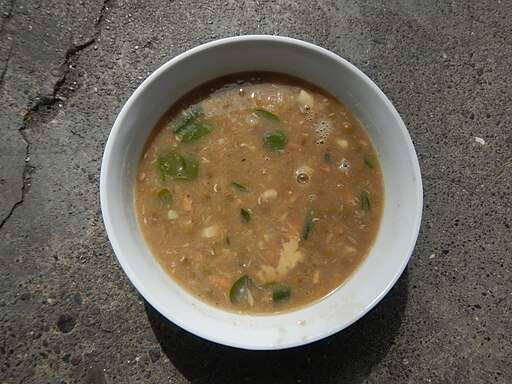

Note: The photo is for illustration only — my version of
Ginisang Munggo may look a bit different.
I love Ginisang Munggo for its
very cheap ingredients and rich nutritional value — especially
protein. It might take a couple of tries to perfect your own version to
your liking, but once you do, it's very rewarding.
Ingredients
Steps
Rinse and soak the mung beans in water overnight.
Rinse and bring the mung beans to a boil with 3 cups of water in a pot.
Then, simmer for 45 minutes or until you reach your desired consistency.
Add more water if it looks too dry.
In a separate pan, saute garlic, onion, and tomato until soft and
fragrant.
Add the fish sauce and Knorr pork cubes, and stir to combine.
Add the boiled mung beans and malunggay leaves, then stir and bring to a
boil. Reduce the heat and simmer for 10 minutes. You may add water at
this stage to achieve your desired consistency.
Turn off the heat. Crush the chicharron into bits, add it to the dish,
and stir.